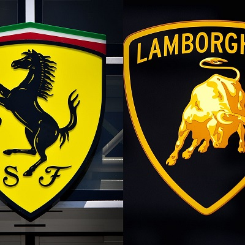
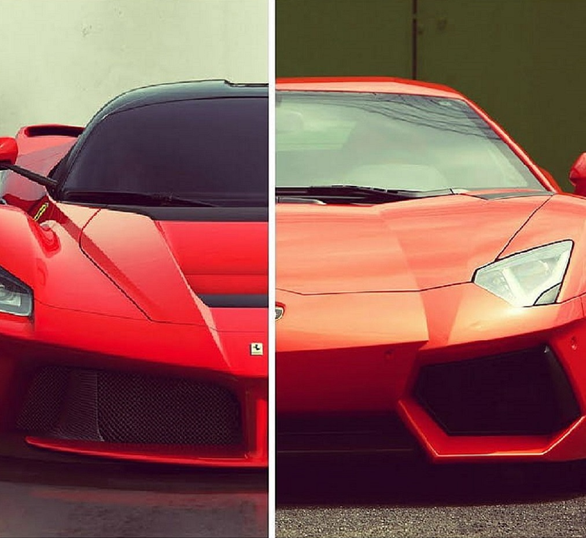
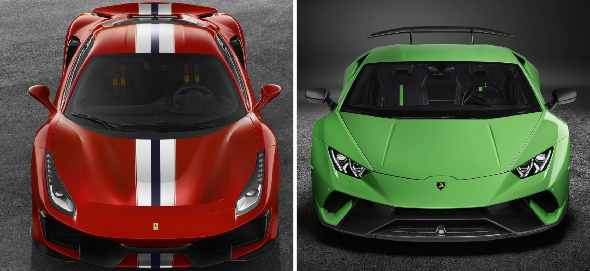

Ferrari vs Lamborghini
Rivalitatea Ferrari-Lamborghini a fost una dintre cele mai durabile și incitante povești din lumea automobilelor timp de multe decenii. Totul a început cu o insultă când se presupune că Ferruccio Lamborghini l-a provocat pe Enzo Ferrari, susținând că tractorul său are un ambreiaj mai bun decât Ferrari-ul său.
Acest comentariu nu i-a plăcut lui Ferarri, așa că i-a răspuns lui Lamborghini „lasă-mă să fac mașini, te ții să faci tractoare” crezând că este un simplu fermier și nu înțelege măiestria sau ingineria din spatele creării unei mașini sport grozave. Revoltat de acest răspuns, Ferruccio Lamborghini a jurat: „Îți voi arăta cum să faci o mașină sport”.
|  | Rivalitatea de lungă durată Ferrari și Lamborghini au o istorie bogată și o legătură inextricabilă cu cultura italiană. Ambele companii au fost fondate de antreprenori inspirați care au căutat să creeze o experiență automobilistică unică, de ultimă generație, pentru elita mondială. |
Performanță și specificații tehnice Din punct de vedere al performanței, cea mai rapidă mașină a lui Lamborghini – Veneno – are o viteză maximă mai mare decât Enzo de la Ferrari datorită designului său mai aerodinamic. Cu toate acestea, în ceea ce privește timpii de accelerare, Ferrari preia adesea conducerea datorită motoarelor turbo și a cuplului superior. De exemplu, SF90 Stradale poate trece de la 0 la 100 Kph în 2 secunde. |
Abordări de inginerie și proiectare Acești producători italieni de automobile de lux sunt recunoscuți la nivel internațional pentru designul lor orientat spre performanță, măiestria rafinată și tehnologia de ultimă oră. |
Diferențele în experiența de conducere Experiența de conducere între vehiculele Lamborghini și Ferrari poate fi destul de diferită. În timp ce ambele oferă o călătorie incredibil de palpitantă, ele posedă caracteristici specifice care îi deosebesc. Ferrari-urile sunt cunoscute pentru puterea lor brută și agresivitatea, cu accent pe performanță, în timp ce Lamborghini-urile sunt mai rafinate și mai luxoase. |
Pret și exclusivitate Când comparăm prețurile mașinilor sport de lux, este esențial să ne amintim că fiecare model are o valoare unică responsabilă de dictarea costului său. Modelele în ediție limitată sunt mult mai scumpe decât modelele obișnuite datorită rarității și fineței lor. Chiar și cele mai populare modele din toate timpurile, cum ar fi Ferrari 360 Modena F1 și Lamborghini Gallardo rămân exclusiviste, având o disponibilitate limitată, apoi fiind înlocuite cu modele noi. |
|  |  |  |
Rivalitatea dintre Ferrari și Lamborghini a captivat lumea auto de zeci de ani. Ambele mărci au fost de mult timp iconice în sine, fiecare având o bază de fani devotați. Sunt sinonime cu viteza, puterea și luxul și au fost construite de generații de ingineri pasionați care se străduiesc să depășească limitele în ceea ce privește performanța. Nu este atât de simplu să spui că unul este mai bun decât celălalt, deoarece frumusețea este în ochii privitorului.
Dacă doriți să experimentați emoția acestei rivalități, de ce nu vă urcați la volanul unui Lamborghini și Ferrari pe un circuit de curse pentru a vă decide despre ce este mai bine să conduceți?